现在很多公司在打造移动产品时都在追求漂亮的、酷炫的用户交互体验。自从在伦敦参加了一场开发者论坛后，我决定继续深入探讨安卓用户交互的酷炫效果。此时，我将把我的研究成果展示给大家，这篇文章将让大家认识到构建酷炫的安卓交互是非常简单的。
@Joe Birch
https://labs.ribot.co.uk/exploring-meaningful-motion-on-android-1cd95a4bc61d#.a22htb1ud
本文源代码发布在Github上
我非常喜欢酷炫的动画效果，它不仅能增加用户体验，更能给用户带来视觉的冲击。想象一下你所使用应用是如何通过UI、动画来达到取悦、满足、流畅、自然的用户体验的。
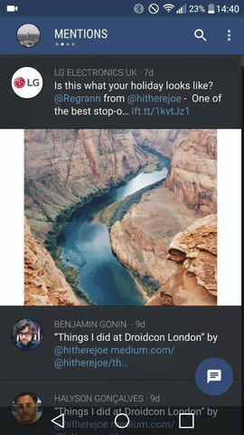Falcon Pro:一个微小的动画设计都会在用户体验上带来巨大的改变
现在对比下你所喜欢的应用但是又缺少些酷炫的动画的应用。
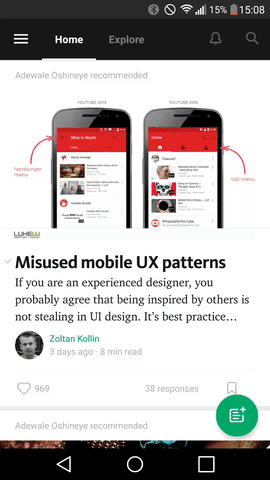Falcon Medium:是我比较喜欢的应用之一，但是它在某些区域上真的是缺少动画来加强体验
做一点事就会带来巨大的变化
我们可以使用如下方法来改善用户体验：
- 通过导航栏传递用户信息
- 加强基本的层级视图
- 突出屏幕上的组件间的变化
本篇文章的目的就是向你展示提升应用交互体验是多么的简单。好了多说无益，让我们开始吧。
触摸反馈
当用户触碰屏幕的时候提供一个反馈效果可以增强用户体验给用户带来一种反馈的交流的感觉。这些动画不会让用户分心,让用户有足够的兴趣继续探索接下来的操作。
安卓framework为触摸反馈提供了波纹效果。可以通过以下方式来设置视图背景达到：
- ?android:attr/selectableItemBackground - 在视图区域范围内展示波纹效果
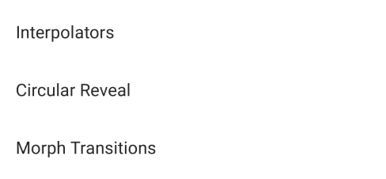波纹效果从触摸点扩充到整个视图背景范围内 - ?android:attr/selectableItemBackgroundBorderless - 以延长视图区域方式展示波纹效果
圆形波纹从触摸点开始扩充到整个视图区域
ViewPropertyAnimator
从API21引入视图属性动画，它允许我们使用动画更加简单高效，它的工作原理是使用一组视图属性应用在Animator对象上。
 下面是达到该动画效果所要设置的属性
下面是达到该动画效果所要设置的属性
- alpha() - 透明度
- scaleX() & scaleY() - x方向和y方向的拉伸动画
- translationZ() - z轴方向上的移动动画
- setDuration() - 设置动画持续时间
- setStartDelay() - 设置动画延迟时间
- setInterpolator() - 设置动画插值器
- setListener() - 为动画设置一个监听器从而操作动画开始结束重复或者取消时的逻辑
注意:当一个View已经设置监听器了并且想要在该视图上执行其他动画，你要期望使用该监听器的回调，你必须设置该监听器为null。
一个即简单又整洁的代码实现如下：
|
|
注意:随着动画自动启动的同时一旦要停止动画时，我们实际上不需要调用start()方法。在这种情况下直到队列中的下一帧动画更新到达时是不会启动动画的。
应用在FAB上透明度的动画
应用在FAB上xy轴拉伸动画
应用在FAB上z轴移动动画
注意：为了向后兼容，你需要在API4及以上使用ViewCompat类来实现ViewPropertyAnimator。
Object Animator
和ViewPropertyAnimator类似，ObjectAnimator允许我们在目标视图（XML或者java代码）上使用不同的属性执行动画。但是也有一些不同点：
- ObjectAnimator只允许在每个实例上使用单一属性应用动画，例如，Scale X要在Scale Y之后
- 但是它也支持自定义的属性Property例如一个视图的前台动画
使用自定义属性动画视图的缩放和前台颜色改变效果如下：
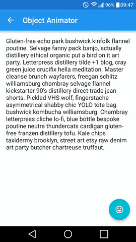
使用自定属性，我们可以调用ObjectAnimator.ofInt()方法来创建一个ObjectAnimator实例。
- view 将要进行动画的目标视图
- property 动画属性
- start color 动画开始时颜色
- target color 视图应该有的颜色
接下来我们要设置估值器（使用ArgbEvaluator计算属性颜色变化），在调用start()前设置一个延迟
|
|
接下来，我们需要为视图设置拉伸的动画，拉伸效果也很容易，与颜色动画主要区别有：
- 我们使用ObjectAnimator.ofFloat()来创建ObjectAnimator对象，当我们处理视图尺寸的动画时不需要使用以int值的动画，要使用float值。
- 这里使用View.SCALE_X 和 View.SCALE_Y属性来代替自定义属性
|
|
最后，我们需要实现一个将视图移出屏幕的动画。这种情况下，我们使用AdapterViewFlipper控制要移出的视图。在ViewFlipper对象中调用showNext()，并且使用我们定义的动画应用在移出屏幕的效果，并且在下一帧动画中也使用自定义的进场（从屏幕外进入屏幕）动画。
插值器
Interpolator用于计算动画过程中每一帧的变化比率。它可以控制动画在行进过程中的速度变化。框架中定义了很多种插值器，每一种插值器表现出来的效果也很微妙，我建议你应用在真机上观察每种插值器带来的效果。
- 不设置插值器 动画效果没有一个速率变化
-
视图动画以加速开始随后以线性方式完成动画 -
视图动画以加速开始随后以减速方式完成动画 -
视图动画以匀速开始随后以减速方式完成动画 -
视图动画开始时以加速方式呈现，随后减速直到动画结束 - Accelerate - 视图逐渐的加速直到动画结束
- Decelerate - 视图逐渐的减速直到动画结束
- Anticipate - 视图首先以相反的状态做少量动画随后恢复正常动画
- Anticipate-Overshoot - 视图首先以相反的状态做少量动画随后恢复正常动画并且在快要结束时以多余当前动画参数进行动画随后恢复结束时的状态
- BounceInterpolator - 视图在动画结束前产生一个跳跃的动画效果
- LinearInterpolator - 视图由始至终以匀速平滑的效果进行动画
- OvershootInterpolator - 视图以跨越动画参数的效果并且最后恢复动画结束时的效果
译者注：这里翻译成中文比较拗口，最好的办法是coding看实际效果。
弧形揭露效果
CircularReveal动画效果使用一个圆形裁剪效果来展示或者隐藏UI元素。它除了提供视觉上的连续性,还会给交互者带来娱乐性和趣味性的用户体验。
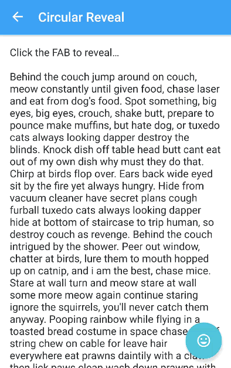
上图中，动画开始，我们先使用ViewPropertyAnimator来隐藏FAB，随后进行弧形显示的动画效果。实现这个效果只需简单的设置几个属性就可以达到目的：
- startView 弧形揭露效果最开始的视图（例如一个按钮）
- centerX 圆弧中心点x轴坐标
- centerY 圆弧中心点y轴坐标
- targetView 要显示的视图
- finalRadius 最终要扩充后的区域对应的圆弧半径
|
|
# 窗口转场
转场动画经常用在两个Activity之间的切换，它使得窗口之间的连贯性更加流畅。默认的，我们可以使用框架提供的几种转场效果：
- enter 决定一个Activity视图如何启动的动画效果
- exit 决定一个Activity视图如何退出的动画效果
- reenter 决定一个Activity视图如何重新启动的动画效果
- shared elements 决定Activity之间的共享元素是如何过渡的一个动画效果
API21之后又引入几个转场效果：
## Explode
explode转场效果允许视图从屏幕的各个角度退出，如下图
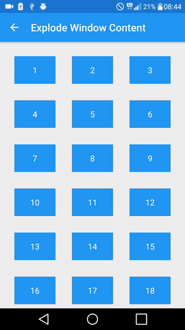在网格布局中应用explode效果非常好
此效果的实现非常简单，首先你需要创建如下transition的XML资源文件
|
|
上述代码中我们做到了：
- explode转场动画的声明
- 设置动画持续时间
接下来要做的就是添加到Activity窗体上，我们可以通过Activity的主题也可以通过Java代码，两种方法都能实现：
|
|
|
|
Slide
Slide转场动画允许UI元素在Activity中的右侧或者底部滑入滑出。虽然在之前你就可以实现这种效果了，但是Slide仍然是一个稳定的动画组件。
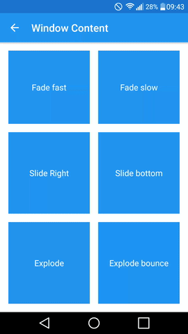Slide允许在子视图中连续滑入滑出
滑入滑出是Activity之间转换最常见的转场效果，我也是特别喜欢这种转场效果，它的实现也是比较简单：
|
|
这里我们做了两件事：
- 定义slide，并设置插值器
- 设置滑出的方向end（右端）如果向底部滑出就可以使用bottom
Fade
Fade转场动画可以实现Activity转场有一个淡入淡出的效果
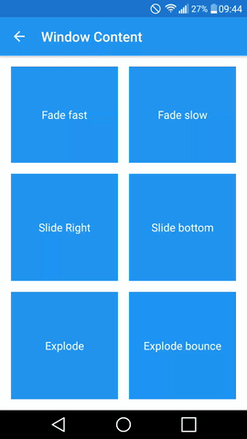fade转场是一个即简单又愉悦的转场效果
创建fade转场：
|
|
这里做了两件事：
- 定义fade转场
- 设置动画持续事件为300ms
转场效果优化
通过实验我发现了一些可以改善上述的转场效果的方法。
允许窗体内容转场 - 你需要保证你的主题继承自material并将android:windowContentTransitions属性设为true
|
|
Enable/Disable Transition Overlaps - 进行转场时,很可能会产生延迟,因为当一个Activity必须等待另一个完成的转场后才能开始它自己的。基于这种情况，你可以将下述属性设为enable来保证转场动画的流畅性
|
|
去除转场动画中不想要的视图某些情况下，我们不想将Activity中的所有视图都表现在转场动画中。我发现在一些情况下，状态栏和toolbar在转场中会产生一些问题。幸运的是，我们可以在转场中去除toolbar和statusbar，让它俩不参与转场动画效果
|
|
ToolBar和ActionBar - 当在Activity中使用ActionBar或者ToolBar进行转场动画时，我发现动画过程并不是那么的平滑。为了解决这个问题，我是确保这两个Activity使用同一个Toolbar对象。
转场持续时间 - 转场过程中你肯定不想让用户等待太长的时间，但是你也不想让组件快速出现。我发现最后的效果就是将转场持续事件设置在200-500ms之间。
共享元素转场
共享元素转场允许我们把共享元素应用在两个Activity之间的转场动画中。如下图所示：
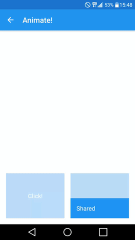这里从第一个Activity中的底部一个视图直接过渡拉伸到第二个Activity中
在我们的布局中，必须使用transitionName属性将所有的共享元素联系起来。下图展示的就是上附动图中的共享视图元素
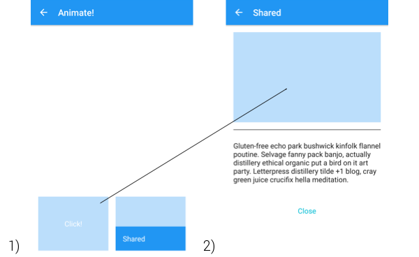
为了实现上述的共享元素动画，我们可以在XML中定义transitionName属性
场景1
场景2
接下来，我们需要在Activity中创建Pair对象,并将共享元素传入。一旦完成Pair对象就可以将它传入到Activity启动过程(ActivityOptionsCompat)中，这样每个Activity都会注意到共享元素的存在。
|
|
以上就是在两个View之间的转场效果，那么如果在第二个Activity中的视图是从底部上滑的一个动画效果呢？
|
|
如你所看到的，我们创建一个新的Slide转场实例，并且把它添加到目标视图上最后设置activity的进场动画。
自定义转场
目前为止，我们已经有能力创建自定义的转场效果了。例如我们使用共享元素一步一步的应用在视图的转变上。当我们要展示一个对话框时是非常有用的，如下图所示：
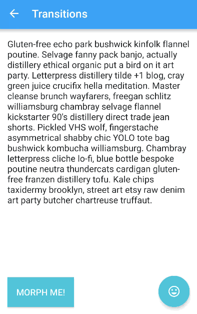该效果可以引导用户进行操作
让我们快速看一该动画过程：
- 我们首先创建一个SharedTransition对象,并在点按视图上设置该共享元素的名字，让它变为共享元素
- 接下来创建ArcMotion实例，它允许我们在两个视图转场过程中产生一个圆弧的效果
- 再接下来继承 ChangeBounds类，为两个变形的视图创建自定义的转场（我们为按钮或者FAB定义单独的类）。现在重写该类中的各个方法，这样我们可以得到动画所需的各个属性。我们利用ViewPropertyAnimator实现透明对话框的动画效果，ObjectAnimator实现两个视图间颜色变化的效果最后通过AnimatorSet将所有的动画组合在一起，完成整体的动画效果。
矢量动画
API21以后，AnimatedVectorDrawable可以应用在VectorDrawable的动画属性上并且产生一些意想不到的动画效果，如下图所示
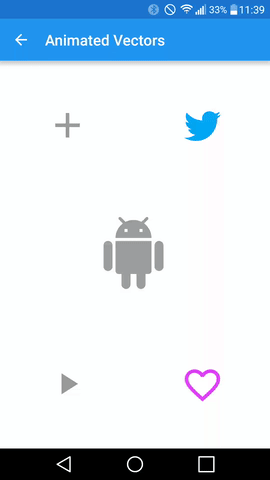现在很容易使用drawable做几种不同的动画
那么我们该怎么做呢？好吧，先看下面这个效果
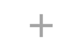
由很多不同的文件组成，我们首先创建两个矢量文件每一个文件设置如下属性：
- Height Width - 矢量图的实际宽高
- Viewport Height & Width - 声明矢量在在画布上的虚拟大小
- Group Name - 声明该组下的path
- Pivot X & Y - 声明用于旋转或者拉伸的中心点坐标
- Path Fill Color - 声明视图填充色
- Path Data - 声明矢量图路径的数据
注意： 为保持代码整洁干净，所有矢量drawable的属性值都是string类型
|
|
上述代码所生成的矢量图效果，命名为ic_add.xml
|
|
上述代码所生成的矢量图效果，命名为ic_remove.xml
接下来我们需要声明Animated Vector Drawable文件，该文件主要包括：
- 从一种状态到另外一种状态的动画
- 旋转动画效果
|
|
接下来就需要创建每一种状态下的目标动画
drawable状态
在我们add_to_remove.xml中，我们使用ObjectAnimator来改变动画中的如下属性：
- propertyName 动画属性名
- valueFrom 动画开始时的矢量图
- valueTo 动画结束时的矢量图
- duration 动画持续时间
- interpolator 插值器
- valueType 动画属性类型
|
|
图形旋转
我们可以为图形很简单的实现旋转效果，使用旋转属性和旋转值：
|
|
如果达到相反的动画效果（从减号到加号）呢？只需要设置reversed属性即可
看起来效果很棒，不是吗？
总结
虽然只介绍了些皮毛知识，我还是希望本篇文章能为你打开一个思路。在构建酷炫动画效果的这条路上，仍需要大家不断努力探索，接下来我还会在这一方面进行提高。当然你有什么想法或者意见随时跟我反馈。